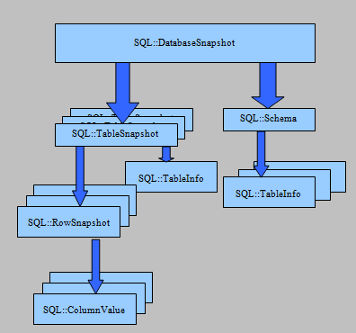

SQL Database Snapshots
With databases being central to any business application, it is inevitable that the design will change many times before delivering a software solution; adding a good deal of time and cost to the development cycle. Test data, sample data, and initial values for published databases all take time to create and maintain. For test suites to behave properly, the database may need to be reset to some consistent state. Sample databases often need to be restored to a pristine condition, ready for the next demonstration. When a customer installs your application’s database, they will need to define the tables and populate initial values; and that customer’s database may be Microsoft SQL Server, Oracle, DB2, MySQL, or any one of a number of other databases.This article discusses the SQL Snapshot objects in Alpha Five. Snapshots store database definitions and data in a single object that can be created from a live database, persisted to and read back from XML, and can be used to create or re-load a database on any supported target of Alpha Five Data Access Objects (AlphaDAO).
The examples presented here assume that you are familiar with XBasic scripting of SQL objects in Alpha Five. For brevity, we will emphasize the specific tasks required to manage snapshots.
A Quick XBasic Example
Let's start with a quick example. Suppose that you have been creating the next great Contact Management software application. The database for your application has tables named Contact, Address, Appointment and Meeting Notes; pretty basic, but you need to get a proof of concept to your investors.The first thing to do is to create a snapshot of the existing state of your database. The script below connects to your database, extracts a complete snapshot of all tables and saves the snapshot to a disk file. As with all of the samples shown here, error checking is omitted for readability.
dim cn as SQL::Connection
dim sn as SQL::DatabaseSnapshot
cn.open("::Named::MyDatabase") 'Open the source database
sn.load(cn) 'Take a snapshot of user tables
file.from_string("<MyFile>", sn.XML) 'Save the snapshot as XMLThe snapshot data is stored in a database neutral format, so we can take our snapshot and load it into a new database with a script like the one below.
Dim cn2 as SQL::Connection
Dim sn2 as SQL::DatabaseSnapshot
cn2.open("::Named::TargetDatabase") 'Open the target database
sn2.XML = file.to_string("<MyFile>") 'Load the XML file into the snapshot
sn2.Store(cn2) 'Create the tables and load the dataA snapshot is an in-memory object. It is intended for test, initial and sample databases. If your data size exceeds the amount of memory available to Alpha Five, the snapshot may still load, but the performance will be severely degraded and you can expect the process to take a very long time and to result in a very large text file.
The Objects Behind Snapshots
If creating that snapshot all seemed just a little too easy; you are right. There is a lot of work that the snapshot is doing for you automatically. The script above may be all you ever need, but we are going to take a little deeper look at the way the snapshot works and explore some other options that may be helpful.
As you have already seen, there is an object called SQL::DatabaseSnapshot. A DatabaseSnapshot can hold both the definition and the data for a complete schema (set of tables) in a database. The schema includes primary and foreign key references as well as additional indexes.
In the first example, we asked the DatabaseSnapshot object to load the entire set of tables on a specific database connection into the snapshot object. We can also choose a subset of tables to include in the snapshot by constructing a schema object and passing the schema to the load function.
In addition to a complete copy of the schema and the relationships between the tables, the DatabaseSnapshot object manages a collection of SQL::TableSnapshot objects that each contain a copy of the definition of the table they represent and the data from that single table. There is one instance of SQL::TableSnapshot for each table loaded into the DatabaseSnapshot.
The data for each TableSnapshot is managed as a collection of SQL::RowSnapshot objects. Each RowSnapshot object contains a collection of SQL::ColumnValue objects with name, value and is-null properties for individual columns in the row.
Although a single call to Load or Store on a DatabaseSnapshot is sufficient in most cases, you can take complete control at any level and read or populate a snapshot or modify the definitions and data using XBasic scripting.
Examples and References
- SQL::DatabaseSnapshot Example: Selected Tables
- SQL::TableSnapshot Example: A Single Table
- SQL::TableSnapshot Example: Scripting the Load
- SQL::DatabaseSnapshot Object
- SQL::TableSnapshot Object
- SQL::RowSnapshot Object
- SQL::ColumnValue Object
- SQL::DatabaseSnapshot Event Scripts and Snapshot Functions